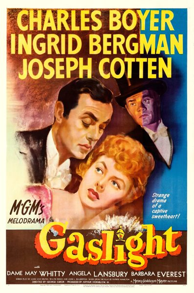

Gaslight

Starring: Charles Boyer, Ingrid Bergman, Joseph Cotten
Director: George Cukor
Writer: John Van Druten, Walter Reisch, John L. Balderston
Producer: Arthur Hornblow, Jr.
Gaslight is a 1944 American psychological thriller film directed by George Cukor, and starring Charles Boyer, Ingrid Bergman, Joseph Cotten and Angela Lansbury in her film debut. Adapted by John Van Druten, Walter Reisch, and John L. Balderston from Patrick Hamilton's play Gas Light (1938), it follows a young woman whose husband slowly manipulates her into believing that she is descending into insanity.
Trivia
- Won the Academy Award for Best Actress.
- Won the Academy Award for Best Art Direction, Black and White.
- Won the Golden Globe Award for Best Actress – Motion Picture Drama.
- Also nominated for: Academy Award for Best Supporting Actress; Academy Award for Best Actor; Academy Award for Best Cinematography, Black-and-White; Academy Award for Best Writing, Adapted Screenplay; and 1 more.
- Based on Gas Light (1938 play by the British dramatist Patrick Hamilton).
- Encouraged by the success of the play and the British 1940 film, Metro-Goldwyn-Mayer bought the remake rights, but with a clause insisting that all existing prints of the first film be destroyed, even to the point of trying to destroy the negative.
- Evidently that order was not honored to the letter, since the 1940 Gaslight remains available for theatrical exhibition, television screenings, and DVD release.
Previous Showings
3 Runs • 2 Festivals
Original Billings: 1 run (July 23, 1944)
Original Run: July 23, 1944 (Sunday - Wednesday)
All runs on record (3):
- July 23, 1944 (Sunday - Wednesday)Charles Boyer, Ingrid Bergman
- March 26 - 30, 1999Directed by George Cukorw/ A Double Life
- April 6 - 8, 2018Hitchcock and Other Masters of Suspense, plus Frankenstein at 200w/ Casablanca